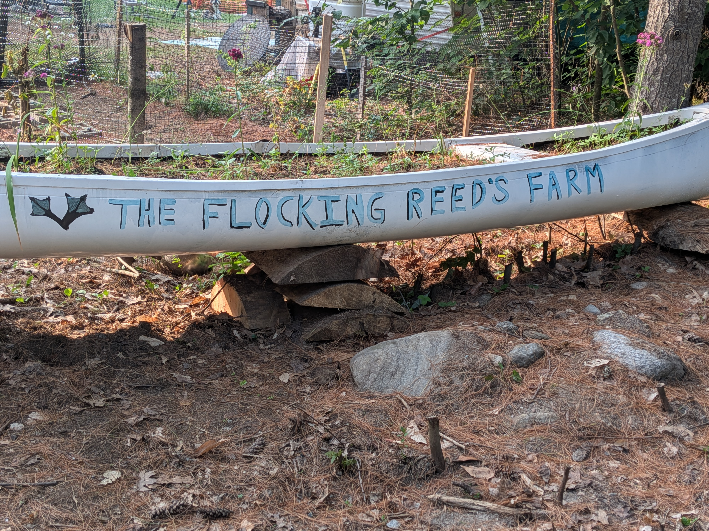
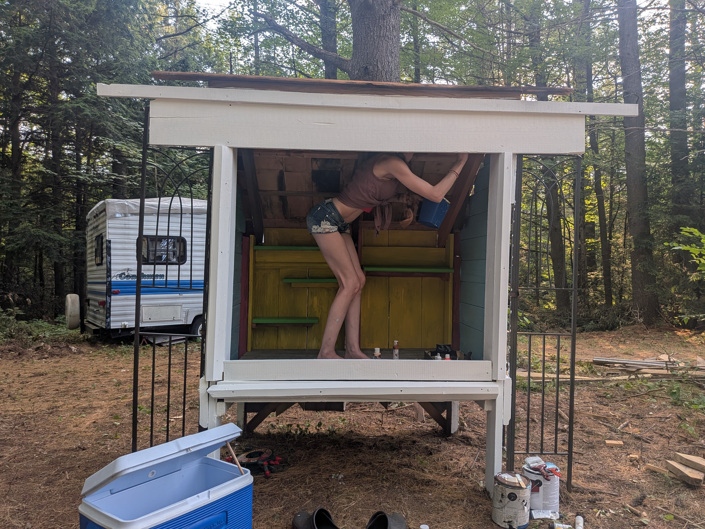
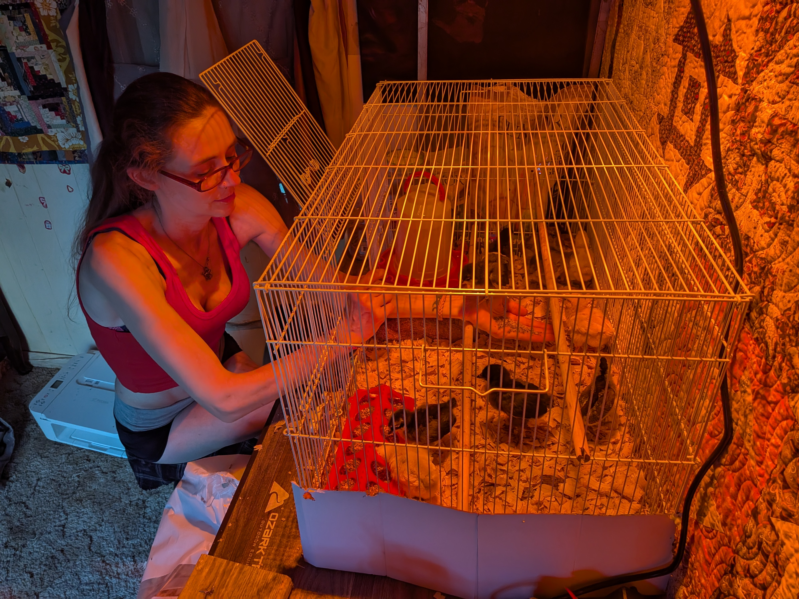
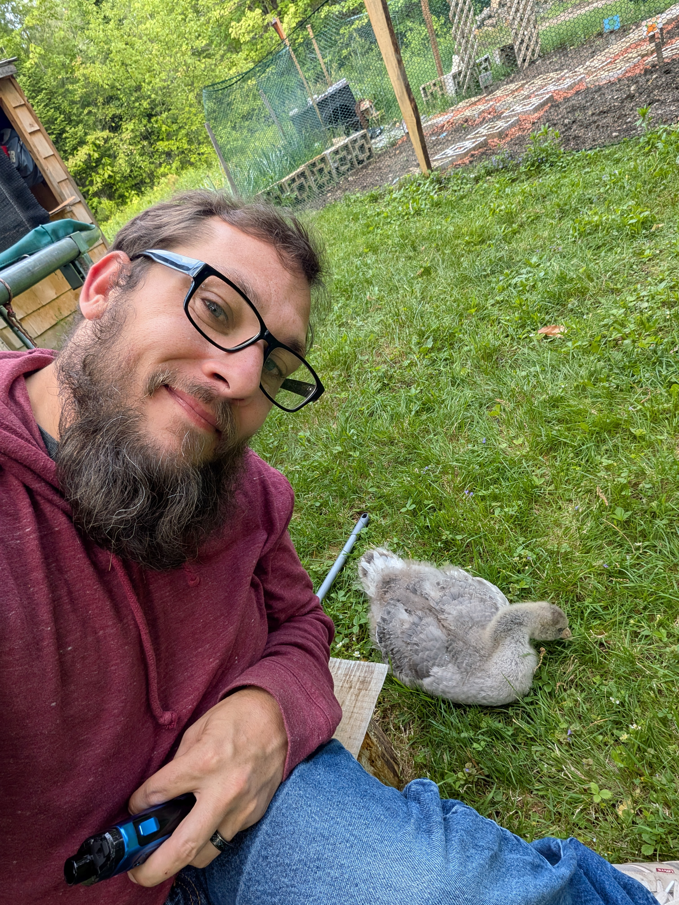
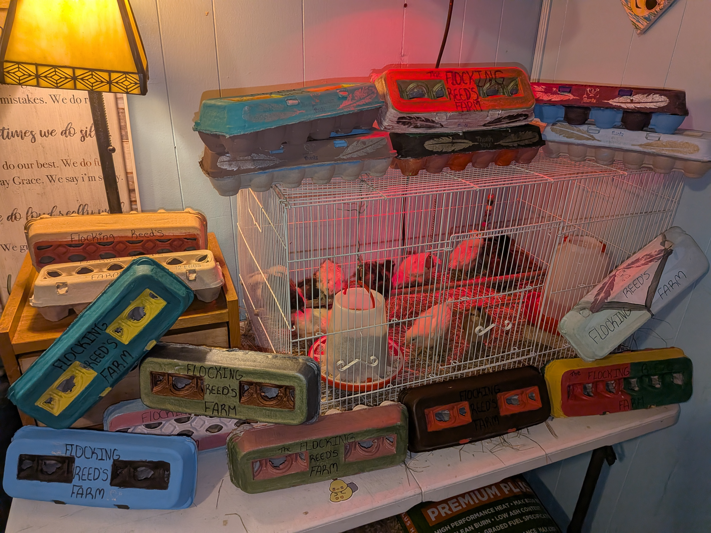

Meet The Flock
"We haven't spent a night apart since we met years ago. We build together, we farm together, and we figure it out together."

From Struggle to Simplicity
We have been married for years, and our journey hasn't always been easy. In 2019, life threw us a curveball when Sammie became disabled with epilepsy and neurological challenges.
With our three children growing up fast, the grocery bills were climbing. We realized we needed a change. We stopped fighting against the "hustle" and decided to lean into the land. We have poured our hearts into this cherished 1970s homestead, respecting its history while building a future for our family.
The "Why"
We decided to slow down. Nicky stepped away from traditional work to be Sammie's full-time carer and farm partner (because we hate being apart for more than 20 minutes anyway!).
We aren't trying to get rich. We just want to live a simple life, pay the bills, and offer affordable food to our neighbors. Whether it's turning an old canoe into a sign or building a coop from recycled pallets, we do it side-by-side.

Division of Labor

Sammie
The Heart & The Content
Wholesome, real, and unfiltered. Sammie runs the daily feedings, manages the animals, and films our journey on her phone. No 4K cameras, no fancy studio—just quick edits on CapCut and real farm life.

Nicky
The Hands & The Tech
Nicky is the muscle and the IT department. He clears the land, builds the coops from recycled materials, and keeps this website running. If something breaks, he fixes it. If a new pen is needed, he builds it.

The Nest
Our farm is more than just animals; it's a family member. We have chickens, geese, and Trix (our fluffy Rex rabbit who lives in the coop and thinks he's a chicken!).
Our goal is to keep this home warm and welcoming forever. Whether it's our oldest finding their path, or the youngest running through the yard, we want this farm to be a nest they can always return to—with a fresh farm-to-table dinner waiting for them.
Join the Family
The best way to get to know us is to watch us in action. Come see the latest chaos on the farm!
Watch on YouTube